Focus sur une opération emblématique
SOCOTEC sécurise les chantiers de TotalEnergies :
un partenariat pour une prévention renforcée
TotalEnergies, avec son réseau de 4 000 stations-service en France, s’associe à SOCOTEC pour garantir la sécurité de ses chantiers de construction et de rénovation.
Depuis 2024, les experts SOCOTEC interviennent sur plus de 100 chantiers par an, assurant une prévention des risques complète.
en France
suivis par an
(en mois max)
France entière
Les préventeurs SOCOTEC identifient les risques, vérifient les plans de sécurité, supervisent le respect des règles sur le terrain et gèrent les permis de travail.
Cette collaboration illustre l’engagement de TotalEnergies à dépasser les exigences réglementaires et souligne l’expertise de SOCOTEC dans la gestion des risques sur des chantiers complexes.
Ce partenariat renforce la sécurité des intervenants et optimise la gestion des projets de TotalEnergies, de la construction à la rénovation de ses installations.
Mon rôle au quotidien consiste à accompagner nos équipes sur les chantiers, en particulier lors des lancements de mission, où j’évalue les conditions de travail et veille à la mise en place des bonnes pratiques de prévention.
Je m’assure également du suivi et de l’évaluation des collaborateurs sur le terrain, en supervisant les préventeurs affectés aux différents chantiers.
Cette mission est très intéressante et essentielle pour garantir la sécurité de tous. Elle me permet d’être au cœur de l’action et de contribuer activement à la sécurité des équipes, ce qui est vraiment gratifiant pour moi.
 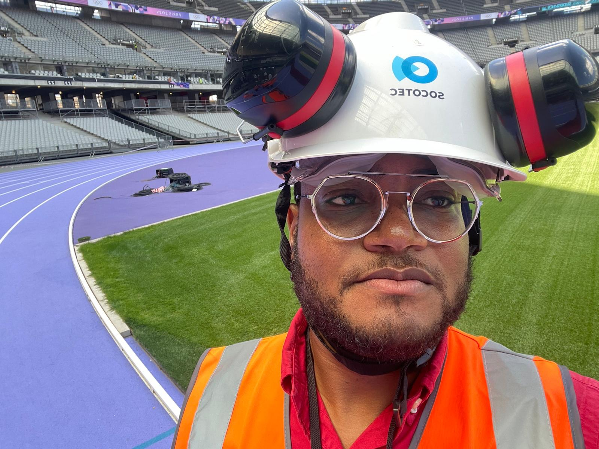
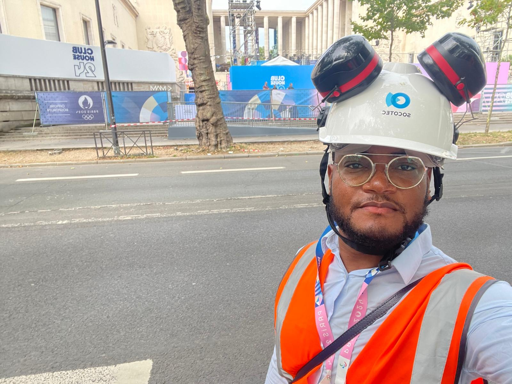
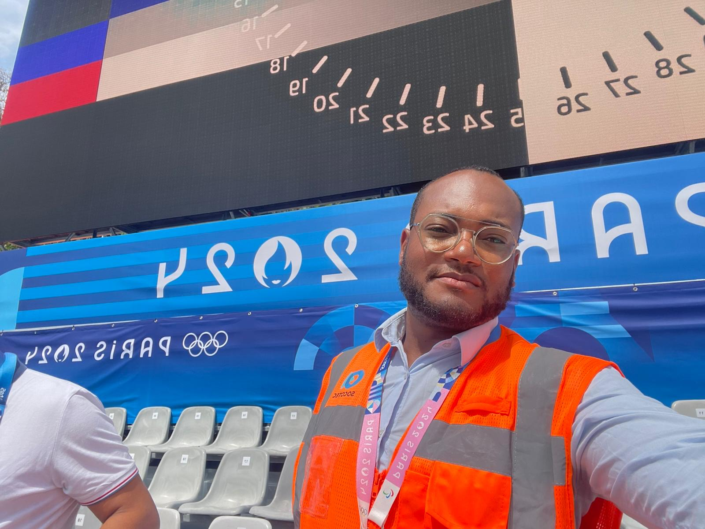
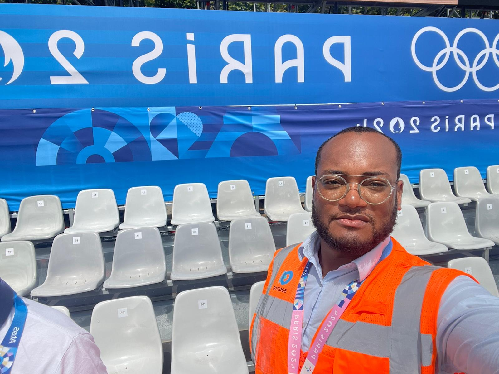
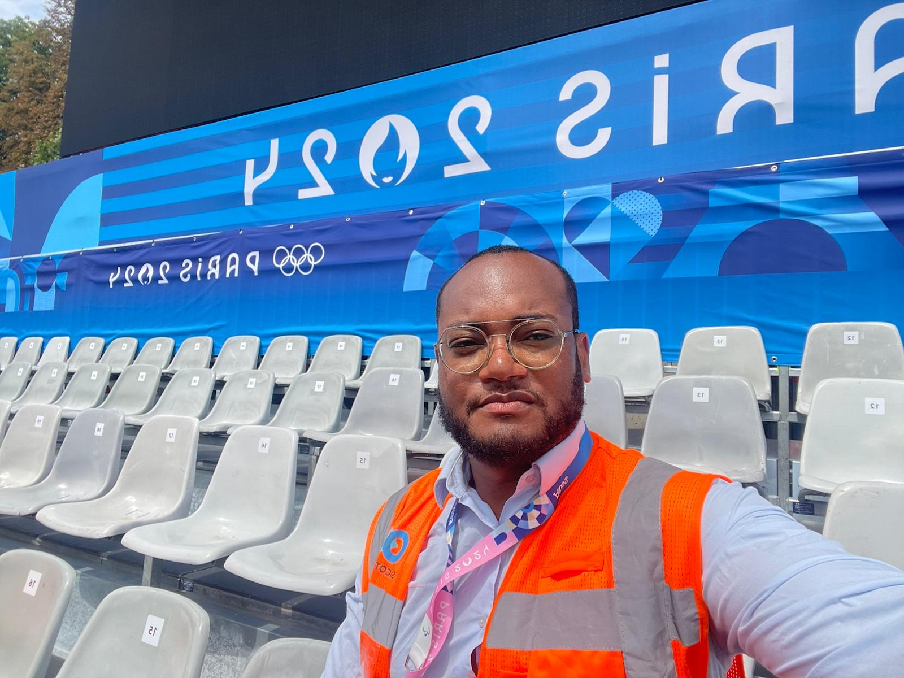
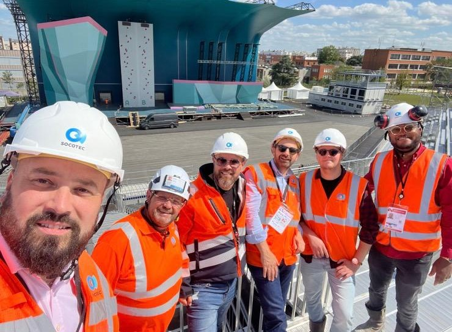
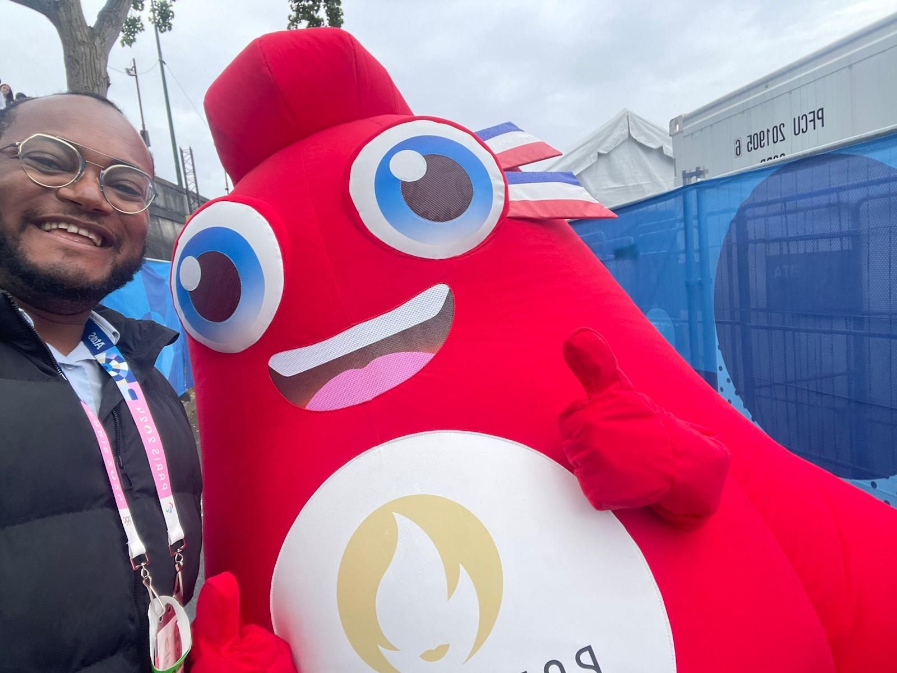
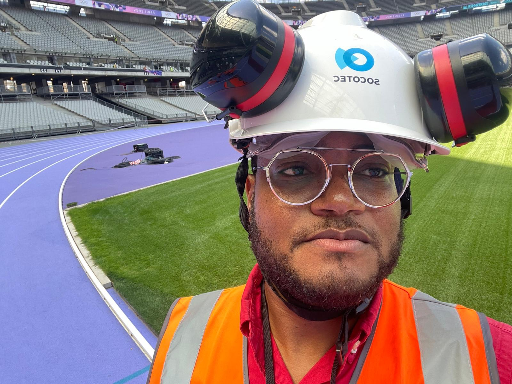
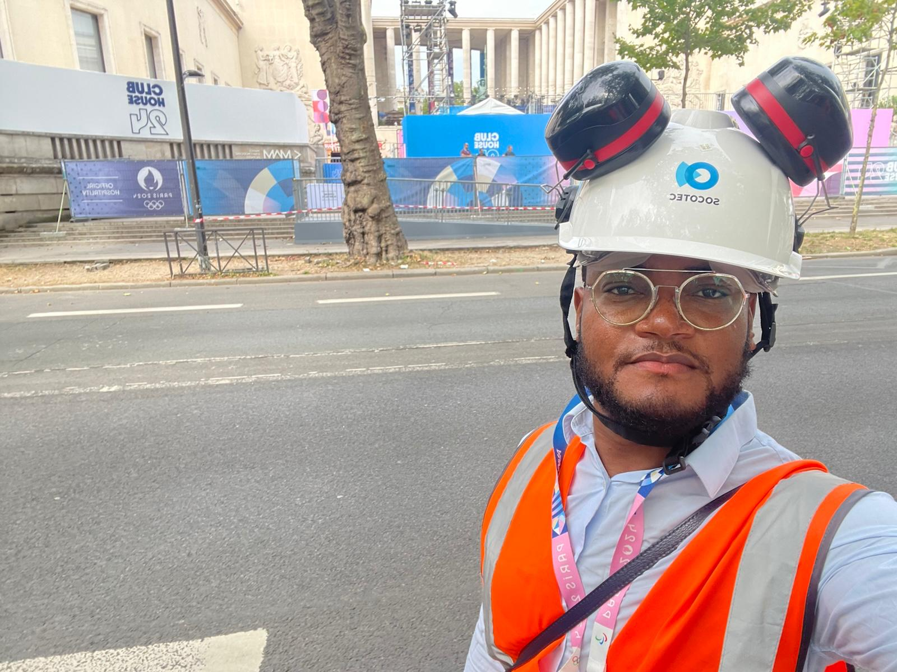
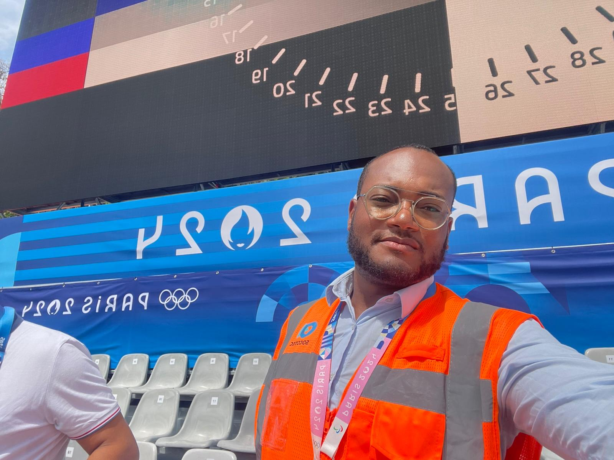
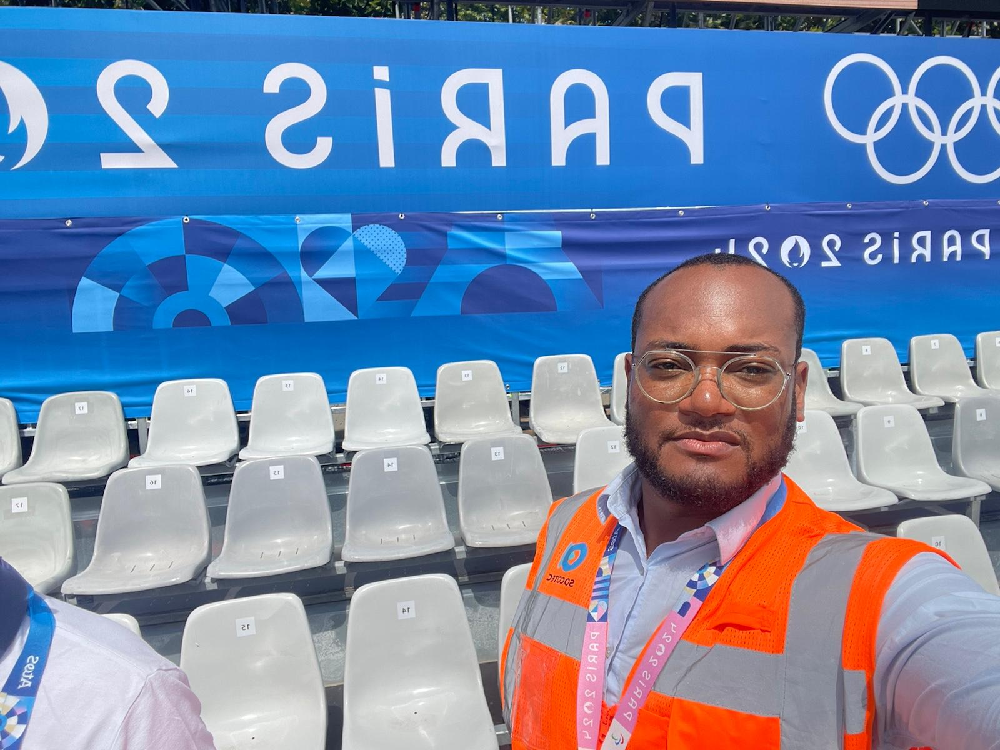
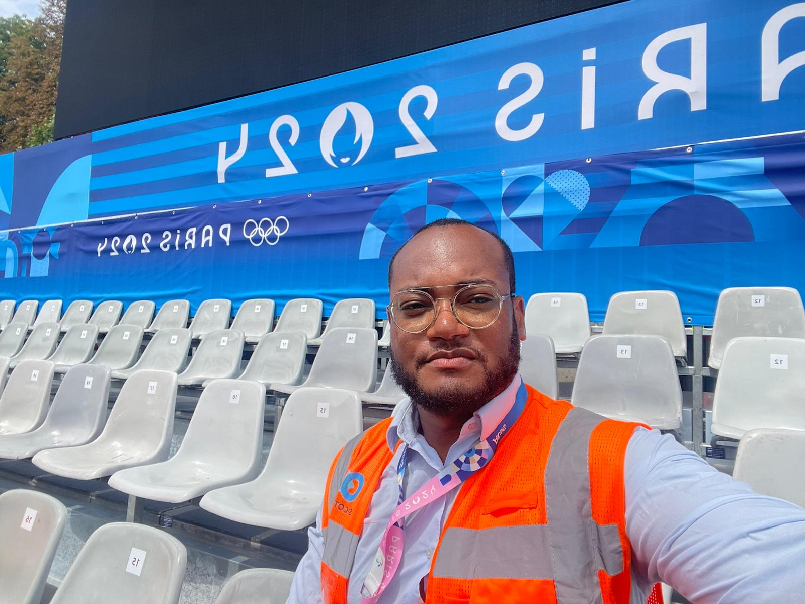
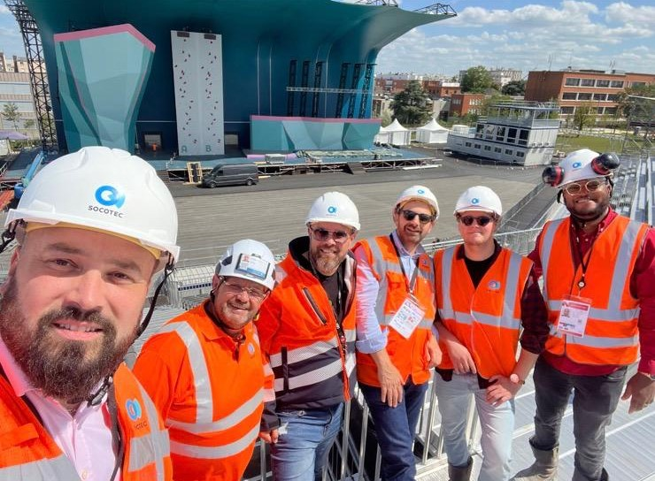
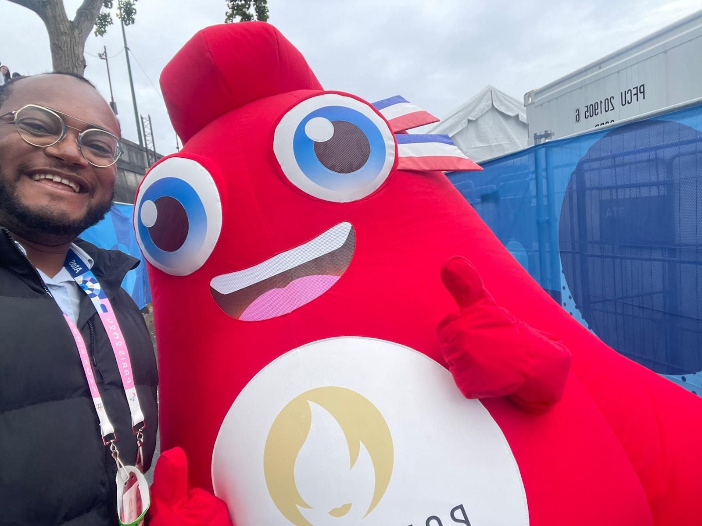